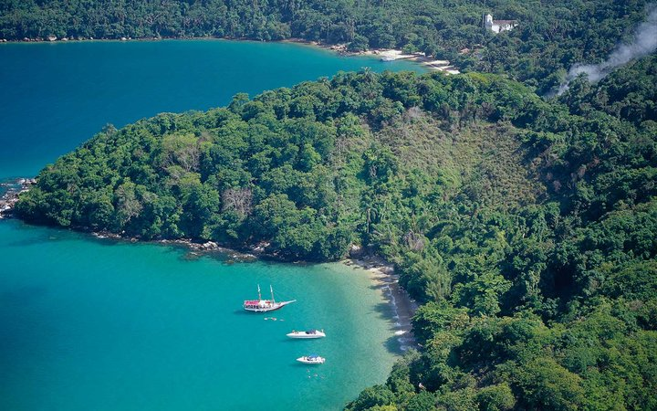

Best Places to Travel

Angra dos Reis, Brazil
Brazil’s visa waiver during the Olympics was a success for one big reason: it encouraged travel beyond the big cities. The tourism board hopes to bring back the waiver, and if you’re planning to take advantage, save time to visit Angra dos Reis, between Rio and São Paulo. This popular Brazilian vacation area is where cariocas go to escape the crowds. “It’s where many of the country’s elite have their beach villas,” says Martin Frankenberg of Matuete, who has access to several of these glamorous rentals. Big changes are coming to the region. In May, Brazilian chain Fasano will open a long-awaited 54-suite hotel in a complex that includes a marina, golf course, restaurants, and a spa. The design is striking, with elevated wooden buildings that look like they’re floating, all with open-air terraces and views of the forest and sea. And the government recently pledged $8 million to improve the infrastructure on Ilha Grande—an island that’s so popular that they’ve had to impose a daily limit on visitors. —Stephanie Wu
Next